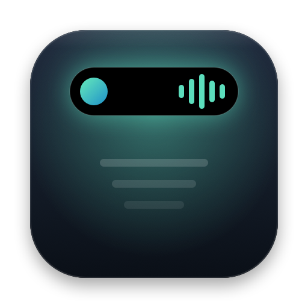

Tu música, siempre a la vista.
Música y Spotify con carátula, título y barras que bailan con la canción. Pasa, pausa o cambia de canción desde la isla, o deslizando dos dedos.

Islandly
Música, carga, temporizadores, archivos y avisos viven en una isla arriba de tu pantalla. Se abre cuando la necesitas y desaparece cuando no.
Para macOS 14 Sonoma o posterior · Macs con o sin notch
La canción, con su carátula y barras que siguen la música.
Funciones
Música y Spotify con carátula, título y barras que bailan con la canción. Pasa, pausa o cambia de canción desde la isla, o deslizando dos dedos.
Al conectar el cargador, un rayo verde y una batería que se llena hasta tu porcentaje, con el tiempo que falta.
¿Dos cosas a la vez? La segunda aparece en su propia burbuja, como en el iPhone.
Suelta archivos en la isla para tenerlos a mano. Sácalos arrastrando o envíalos por AirDrop.
Sube o baja el volumen y la isla te muestra el nivel exacto, al instante.
La lupa de macOS elige el color y Islandly lo copia en HEX, RGB o HSL. Guarda tus últimos colores.
Una cámara verde y un micrófono naranja aparecen cuando cualquier app los usa. Y una luna cuando activas Concentración.
Detalles
Animaciones suaves, atajos de teclado, gestos del trackpad y accesibilidad completa. Y casi no gasta nada.
Abre la isla desde cualquier app. Con ⌘1…⌘9 saltas de pestaña; Esc la cierra.
Dos dedos hacia abajo la abren, hacia arriba la cierran; a los lados cambias de canción.
Tres tamaños de texto, VoiceOver, alto contraste y Reducir movimiento.
En Macs con notch la isla lo rodea; en los demás dibuja su propia isla, negra o de cristal.
Elige en qué pantalla vive la isla; se recoloca sola al cambiar de monitor.
En español y en inglés. Sigue el idioma de tu Mac o elige uno en Ajustes.
Islandly funciona dentro de la protección de seguridad de macOS y solo usa herramientas públicas de Apple. Lo que ve, lo muestra y lo olvida.
No hay registro, analíticas ni anuncios. Islandly no tiene servidores propios.
Calendario, música o Concentración se piden al pulsar “Permitir”, nunca al abrir la app.
Para mover las barras, Islandly mide el sonido de la música y lo descarta al instante. Nunca enciende la cámara ni el micrófono.
La bandeja guarda una referencia a cada archivo, nunca una copia, y no los cambia de lugar.
Abre el archivo descargado y arrastra Islandly a la carpeta Aplicaciones.
La primera vez, macOS dice que no puede comprobar la app. Pulsa Hecho y ve a Configuración del Sistema → Privacidad y seguridad → Abrir igualmente. Solo se hace una vez.
La isla aparece arriba, al centro. Pasa el cursor o pulsa ⌥ Espacio para abrirla.
e8d7903fe768e4858a1b0a4f8ce79450529bc57d19d9e84de29d754715939cca